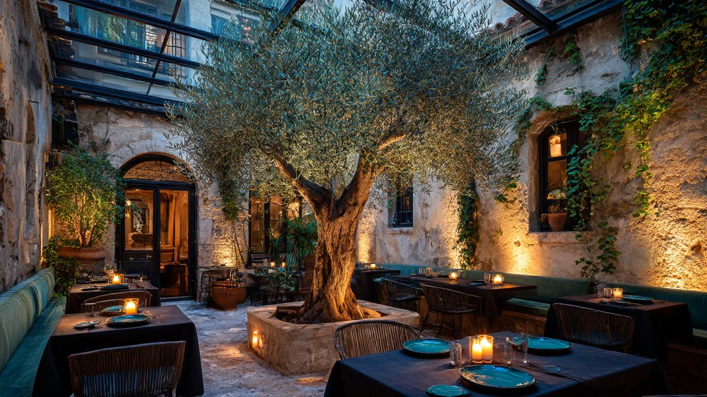
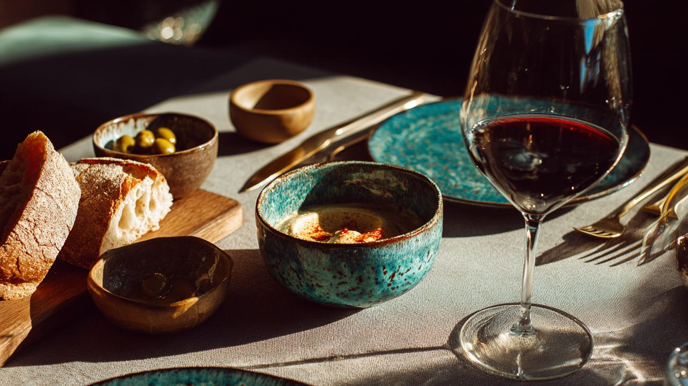
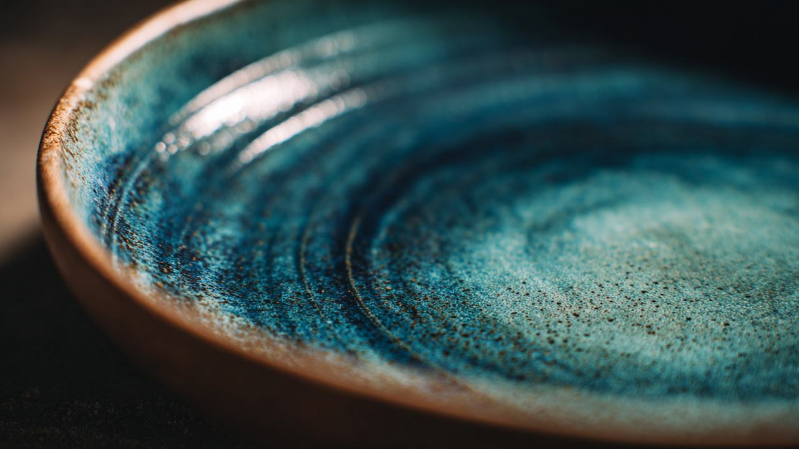
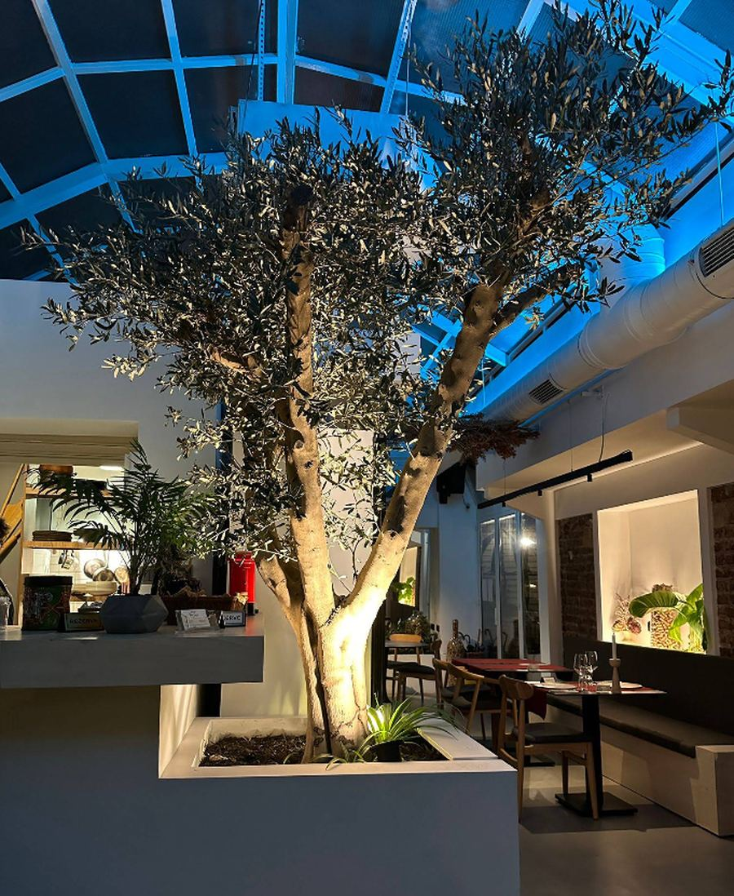
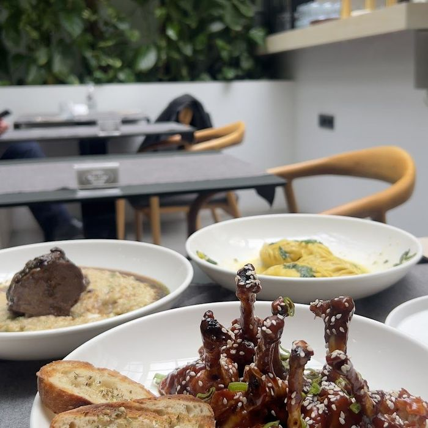
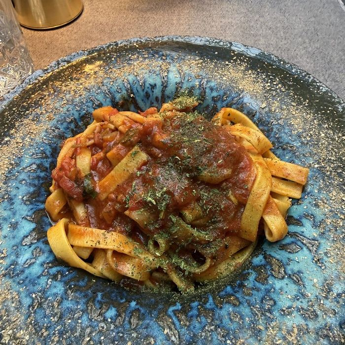

Ana yemek
Kuzu Boyun Tandır
200 gramlık kuzu, ağır ateşte dağılana kadar. Altında patlıcan püresi, yanında isli sebzeler.





Avlu, Alsancak'ın arka sokaklarında, kolayca geçip gidebileceğiniz bir kapının ardında. İçeri girdiğinizde sokak biter: cam çatının altında bir avlu, ortasında zeytin ağacı, akşam ışığı yapraklardan süzülerek masalara düşer.
Salon bilinçli olarak küçük. Cuma akşamları boş masa bulmak zordur — bunu bir övünç değil, bir uyarı olarak yazıyoruz.
Avlu'da yemek paylaşılarak yenir. Tabaklar ortaya gelir, sıra bozulmaz, acele edilmez.
Siz oturur oturmaz gelir, istenmeden. Kendi fırınımızın ekşi maya ekmeği ve tadımlık zeytin.
Tekmil favalı ciğer, incirli sıcak humus, acılı baharat sosuna bulanmış lolipop kanatlar. İkiye de üçe de yeter.
Hamur her gün açılır. Culurgione peynir ve cevizle doldurulur, gnocchi tereyağında kızarır.
Ağır ateşin işi: on iki saatlik brisket, patlıcan püresi üstünde kuzu boyun tandır.
Fındık crunch ya da vişne ganajlı cheesecake, yanında Türk kahvesi.
Mutfak iki kaynaktan besleniyor: Anadolu'nun peyniri, tandırı, tahini; ve elde açılan İtalyan hamuru. İkisi aynı tabakta buluşuyor.
Ana yemek
200 gramlık kuzu, ağır ateşte dağılana kadar. Altında patlıcan püresi, yanında isli sebzeler.

Taze makarna
Tandır etiyle taze tagliatelle, roka ve iki yıllık Kars kaşarı ile.

Taze makarna
Kars göğermiş ve eski kaşarla adaçaylı kremalı sos, mantar, tereyağında kızarmış gnocchi.

Başlangıç
Acılı baharat sosuyla harmanlanmış kanatlar, yanında sarımsaklı ekmek dilimleri.

Kapalı makarna
Sardinya'nın el işi makarnası: taze peynir, ceviz ve fesleğen dolgulu, tek tek kapatılır.

Ana yemek
Derisi çıtır kalana kadar pişmiş somon, sebzeli darı üzerinde.
Peyniri getirtiyoruz, hamuru burada açıyoruz, ekmeği kendimiz mayalıyoruz. Listenin sonu her zaman aynı adres.
Kars
İki yıllık kaşar, göğermiş peynir
Hatay
Tereyağında kızartılan sıkma peyniri
Ege
Zeytin, incir, semizotu, tulum loru
Sardinya
Culurgione — tek tek elde kapatılan hamur
Bu mutfak
Ekşi maya, bazlama, burger ekmeği — hepsi burada

Mutfaktan çıkan her tabak elde çekildi. Mavi sır fırında akar, dipte göllenir, kenarda incelir — bu yüzden iki tabak asla birbirinin kopyası olmaz.
Yemeği bu yüzeye koymak bir tercih: çatal değdiğinde altından başka bir mavi çıkar.
Listenin büyük kısmı Türkiye bağlarından. Dört şarabı kadeh kadeh açıyoruz; sofranın gidişine göre değiştirmek serbest.
Kırmızı · Shiraz
Kırmızı · Merlot
Beyaz · Narince
Rosé · Kalecik Karası
4,8 312 Google değerlendirmesi
“Gizli ve gerçekten özel bir ortam. Dışardan anlaşılmaz, yaşanır.”
“Culurgionenin sosu ve iç dolgusu çok güzeldi. Hepsi ortalama üstü lezzetliydi.”
“Başlangıç olarak tadımlık zeytin ve ekşi maya ekmek veriliyor. Yemekler oldukça lezzetliydi.”
Salon küçük olduğu için hafta sonları rezervasyonsuz masa bulmak zordur. Sekiz kişiyi aşan gruplar için lütfen telefonla arayın.